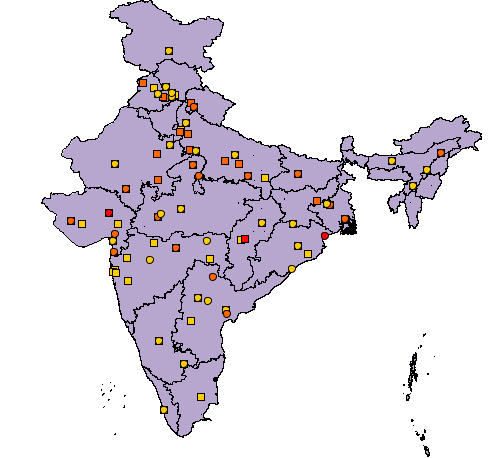

Contaminación del aire en la India
El mapa
Muestra las ciudades de la India con los peores niveles de materia
particulada (PM). Este mapa de la contaminación atmosférica muestra
las ciudades menos saludables de la India. los La Organización Mundial
de la Salud (OMS) mantiene una Contaminación Atmosférica Urbana Base
de datos que incluye las concentraciones medias anuales de PM10 y
PM2.5, calculado a partir de las mediciones diarias. PM10 incluye
partículas Menos de 10 micrómetros de diámetro, mientras que PM2,5 se
refiere a partículas Menos de 2,5 micrómetros de diámetro. La OMS
tiene Directrices anuales sobre la exposición media anual de PM, que
se Referencia para los países que buscan establecer estándares de
aire. De acuerdo con la Directrices, las ciudades pueden clasificarse
en varios niveles sobre la Cantidad (en microgramos por metro cúbico)
de PM. En el proyecto me propongo Utilizar el nivel 1, que es de 70
microgramos por metro cúbico para PM10 y 35 microgramos por metro
cúbico para PM2,5. En el mapa PM10, Las concentraciones oscilan entre
71 y 329 (de acuerdo con los valores de la base de datos) Microgramos
por metro cúbico y en el rango de concentraciones de mapa PM2.5 De 35
a 176 microgramos por metro cúbico. Amarillo, naranja y rojo Se
utilizarán círculos sólidos de color para indicar el nivel de PM
Concentraciones de una ciudad, donde la concentración más baja
Indicado en amarillo y el más alto en rojo.
